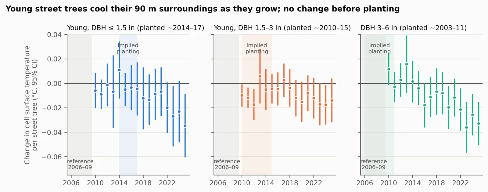
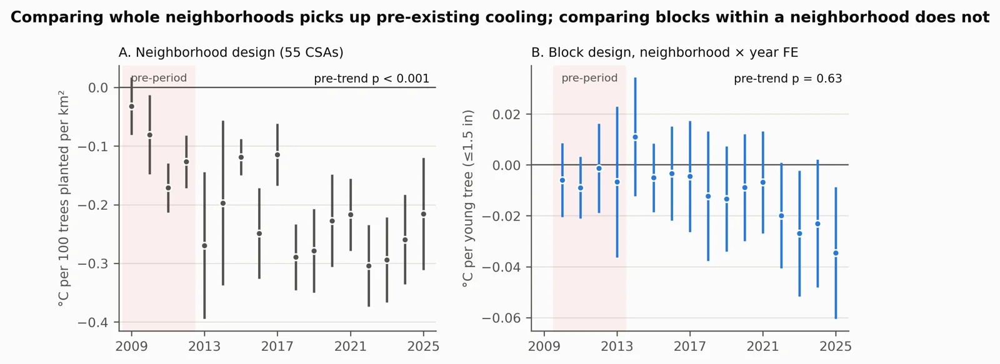

Working paper · October 2026
Do new street trees
cool Baltimore?
A within-neighborhood event study of Baltimore's street-tree plantings and summer surface temperature, 2006–2025. Sahil, Johns Hopkins University.
Each young street tree (trunk ≤ 1.5 in in the 2017–18 city inventory, so planted roughly 2014–17) lowered the summer surface temperature of its 90 m surroundings by 0.026 °C by 2022–25 relative to 2006–09 (95% CI 0.005–0.047 °C), with no detectable change before planting (pre-trend test p = 0.63). The cooling appears only after 2018 and grows as the trees mature. A 90 m cell with five new saplings (an ordinary planted block face) is about 0.13 °C cooler.
That size is what simple physics predicts: a young crown shades roughly 0.2% of a 90 m cell, and if shade is roughly 10–15 °C cooler than sunlit pavement (a rough assumption, not a measurement), that gives 0.02–0.03 °C per tree.

Why a naive comparison fails
Neighborhoods that got more trees in 2013–20 were already cooling in 2009–12, before those plantings (pre-trend p < 0.001). That selection problem is what this design exists to solve.

Design
Baltimore's Forestry Division surveyed every public street tree and every empty planting site in 2017–18 (193,009 records). Trunk size dates the young trees. Empty sites the city judged plantable are the comparison group: same streetscape screen, no tree yet. Landsat 5/7/8/9 summer scenes (111 usable, 2006–2025) give each 90 m cell's surface temperature relative to that day's citywide median. The regression has cell fixed effects and neighborhood × year fixed effects, so it compares blocks within the same neighborhood in the same year. It interacts the count of trees in each trunk-size cohort with year, controlling for vacant sites, mature trees and stumps × year. Standard errors are clustered by neighborhood (277).
Robustness
2022–25 effect per young tree, °C, 95% CI
| Check | Estimate |
|---|---|
| Main specification | −0.026 [−0.047, −0.005] |
| All site types × year (strictest) | −0.027 [−0.048, −0.006] |
| Unweighted | −0.028 [−0.048, −0.007] |
| Clustered by 55 CSAs | −0.026 [−0.047, −0.006] |
| Cell-years with ≥ 3 clear scenes | −0.026 [−0.047, −0.005] |
| Excluding cells with park trees | −0.023 [−0.045, −0.002] |
| Year FE only (no neighborhood × year) | −0.096 [−0.131, −0.060] |
| Long difference, sensitivity-adjusted for a confounder 3× as strong as mature-tree density | −0.024 [−0.038, −0.009] |
The year-FE-only estimate is 3–4 times larger, which shows how much neighborhood-wide trends would inflate a naive estimate.
Known problems
- Planting dates are inferred from trunk size. The city's public layer has no usable planting date. Exact dates would sharpen the design.
- The placebo failed. “Not suitable” planting sites also cool (−0.09 °C per site). They cluster in dense rowhouse blocks that have cooled since 2010, plausibly from vacant-house demolitions. The young-tree estimate does not move when those trends are controlled, but demolition data should be added directly.
- Surface temperature, not air temperature or health. Landsat measures surface (skin) temperature on clear summer late mornings.
- Survivorship. Only trees alive in 2017–18 are counted, which biases toward successful plantings.
Reproducibility
Raw data are fixed and checksummed; every quoted number is recomputed and checked by a verification script; and a GitHub Actions workflow rebuilds everything from scratch on a clean machine on every push.
Related work
- Baltimore Heat Atlas: the tract-level heat vulnerability index this study grew out of.
- Charm City Pulse: a public app that shows residents their block's tree shade and points them to TreeBaltimore's free street trees.